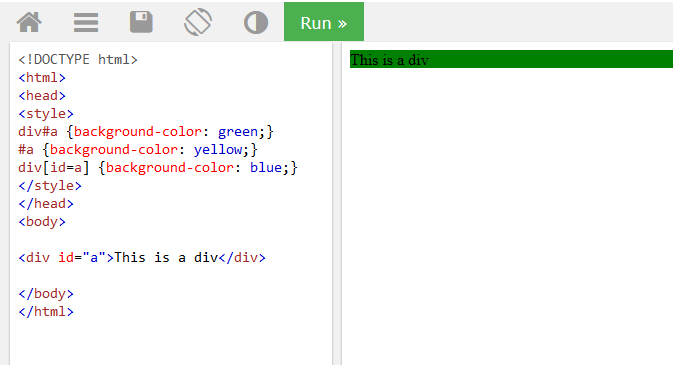

CSS Specificity เหมือนเป็นค่าคะแนนบางอย่างที่สามารถช่วยให้ browser ตัดสินใจได้ว่าจะ ใช้ css rules ใดในการ apply element (จริงๆแล้วค่าคะแนนดังกล่าวไม่ได้มีอยู่จริง เป็นเพียงการสมมุติเพื่อให้เกิดความเข้าใจได้ง่ายๆเท่านั้น) ซึ่งวิธีการตัดสินใจก็คือจะเช็คค่าคะแนนจาก selector ของ rules นั้นๆ ถ้าหาก rules ใดมีค่าคะแนนมากที่สุด จะถูกนำไป apply element ซึ่งก็จะทำให้หน้าเว็บแสดงผล css style นั้นออกมา
โดยปกติแล้ว browser จะตัดสินใจเลือก rules ที่มาจาก external css ลำดับล่าสุดก่อน
ถ้าเป็น rules ที่มาจาก external css เดียวกัน แล้วมีกรณีที่ rules มี selector เหมือนกัน แสดงว่ามีค่าคะแนนเท่ากัน และเนื่องจากเป็นการอ่านโค้ดจากบนลงล่าง browser
จะเลือก selector ที่เป็นตัวล่าสุด เช่น
h1 {background-color: yellow;}
h1 {background-color: red;}
browser จะเลือก h1 {background-color: red;} ไป apply
จำแนก slector แต่ละตัวใน rules ว่าแต่ละตัวมีค่าคะแนนเท่าไหร่ แล้วนำค่าคะแนนของทุกตัวมารวมกัน ก็จะได้ผลลัพธ์เป็นค่าของคะแนนรวม
ผลลัพธ์ คือ div#a {background-color: green;} จะถูก apply เพราะมีค่าคะแนนมากที่สุด
